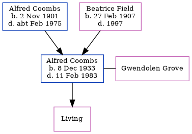

Alfred William Charles Coombs 1933 - 1983
[ Home ] | [ Calendar ] | [ Surnames Index ] | [ Errors ] | [ Family History ]A royal military police officer and police officer and the child of Alfred Coombs (a lorry driver) and Beatrice Field, Alfred Coombs, the third cousin once-removed on the mother's side of Nigel Horne, was born in Faversham, Kent, England on 8 Dec 19331,2,3 and. He had 1 surviving child with Gwendolen M Grove: .
During his life, he was living at 60 Makenade Avenue in Faversham on 29 Sept 19391 - less than a mile from his uncle Sidney John who was living at 11 Napleton Road in Faversham; and at 14 Lynmouth Road, Leicester, Leicestershire, England in 1983.
He died on 11 Feb 1983 in Leicestershire3,4 (motor neurone disease).
Parents
- Alfred William Constable was born on 2 Nov 1901
- Beatrice Louisa S was born on 27 Feb 1907
Citations
- 1939 Register - Findmypast (was the son of the head of the household)
- England & Wales births 1837-2006 - Findmypast
- England & Wales deaths 1837-2007 - Findmypast
- England & Wales Government Probate Death Index 1858-2019 - Findmypast
Media
1939 Register Transcription - TNA-R39-1716-1716D-022-12
England & Wales deaths 1837-2007 - BMD/D/1983/1/AZ/000227/057
England & Wales births 1837-2006 - BMD/B/1934/1/AZ/000224/010
England & Wales Government Probate Death Index 1858-2019 - GBOR/GOVPROBATE/C/1983-1983/00049284
Family Tree
Map
Generated by ged2site. Last updated on Jul 3, 2024
Known Issues
Residence record for 1983 contains no citation